전기산업기사 (2019-08-04 기출문제)
1과목: 전기자기학
1. 간격 d(m)인 두 평행판 전극 사이에 유전율 ε인 유전체를 넣고 전극 사이에 전압 e=Emsinωt(V)를 가했을 때 변위 전류 밀도(A/m2)는?
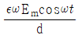
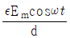
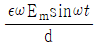
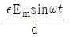
(정답률: 59%)

2. E = i + 2j + 3k (V/cm)로 표시되는 전계가 있다. 0.02 μC의 전하를 원점으로부터 r = 3i (m)로 움직이는는데 필요로 하는 일(J)은?
- 3 × 10-6
- 6 × 10-6
- 3 × 10-8
- 6 × 10-8
(정답률: 48%)
3. 플레밍의 왼손법칙에서 왼손의 엄지, 검지, 중지의 방향에 해당되지 않는 것은?
- 전압
- 전류
- 자속밀도
- 힘
(정답률: 80%)
4. 전류 2π(A)가 흐르고 있는 무한직선 도체로부터 2m만큼 떨어진 자유공간 내 P점의 자속밀도의 세기(Wb/m2)는?
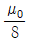
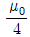
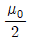
- μ0
(정답률: 58%)
5. 여러 가지 도체의 전하 분포에 있어서 각 도체의 전하를 n배할 경우, 중첩의 원리가 성립하기 위해서 그 전위는 어떻게 되는가?
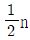
이 된다.- n배가 된다.
- 2n배가 된다.
- n2배가 된다.
(정답률: 73%)
6. 반지름 1m의 원형 코일에 1A의 전류가 흐를 때 중심점의 자계의 세기(AT/m)는?
- 1/4
- 1/2
- 1
- 2
(정답률: 76%)
7. 전류가 흐르는 도선을 자계 내에 놓으면 이 도선에 힘이 작용한다. 평등자계의 진공 중에 놓여 있는 직선전류 도선이 받는 힘에 대한 설명으로 옳은 것은?
- 도선의 길이에 비례한다.
- 전류의 세기에 반비례한다.
- 자계의 세기에 반비례한다.
- 전류와 자계 사이의 각에 대한 정현(sine)에 반비례한다.
(정답률: 74%)
8. 106cal의 열량은 약 몇 kWh의 전력량인가?
- 0.06
- 1.16
- 2.27
- 4.17
(정답률: 71%)
9. 인덕턴스의 단위에서 1H는?
- 1A의 전류에 대한 자속이 1Wb인 경우이다.
- 1A의 전류에 대한 유전율이 1F/m이다.
- 1A의 전류가 1초간에 변화하는 양이다.
- 1A의 전류에 대한 자계가 1AT/m인 경우이다.
(정답률: 62%)
10. 어떤 물체에 F1 = -3i + 4j – 5k와 F2 = 6i + 3j – 2k의 힘이 작용하고 있다. 이 물체에 F3을 가하였을 때 세 힘이 평형이 되기 위한 F3은?
- F3 = -3i – 7j + 7k
- F3 = 3i + 7j - 7k
- F3 = 3i – j - 7k
- F3 = 3i – j + 3k
(정답률: 70%)
11. 직류 500V 절연저항계로 절연저항을 측정하니 2MΩ이 되었다면 누설전류(μA)는?
- 25
- 250
- 1000
- 1250
(정답률: 79%)
12. 동심구에서 내부도체의 반지름이 a, 절연체의 반지름이 b, 외부도체의 반지름이 c이다. 내부도체에만 전하 Q를 주었을 때 내부도체의 전위는? (단, 절연체의 유전율은 ε0 이다.)
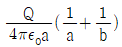
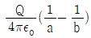
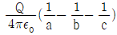
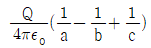
(정답률: 72%)
13. 인덕턴스가 20mH인 코일에 흐르는 전류가 0.2초 동안 6A가 변화되었다면 코일에 유기되는 기전력은 몇 V인가?
- 0.6
- 1
- 6
- 30
(정답률: 70%)
14. 전기기기의 철심(자심)재료로 규소강판을 사용하는 이유는?
- 동손을 줄이기 위해
- 와전류손을 줄이기 위해
- 히스테리시스손을 줄이기 위해
- 제작을 쉽게 하기 위하여
(정답률: 77%)
15. 평행한 두 도선간의 전자력은? (단, 두 도선간의 거리는 r(m)라 한다.)
- r에 반비례
- r에 비례
- r2에 비례
- r2에 반비례
(정답률: 54%)
16. M.K.S 단위로 나타낸 진공에 대한 유전율은?
- 8.855 × 10-12 N/m
- 8.855 × 10-10 N/m
- 8.855 × 10-12 F/m
- 8.855 × 10-10 F/m
(정답률: 74%)
17. 자유공간의 변위전류가 만드는 것은?
- 전계
- 전속
- 자계
- 분극지력선
(정답률: 69%)
18. 접지 구도체와 점전하 사이에 작용하는 힘은?
- 항상 반발력이다.
- 항상 흡인력이다.
- 조건적 반발력이다.
- 조건적 흡인력이다.
(정답률: 82%)
19. 무한장 직선 도체에 선전하밀도 λ(C/m)의 전하가 분포되어 있는 경우, 이 직선 도체를 축으로 하는 반지름 r(m)의 원통면상의 전계(V/m)는?
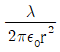
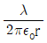
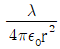
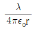
(정답률: 63%)
20. 동의 용량 C(μF)의 커패시터 n개를 병렬로 연결하였다면 합성정전용량은 얼마인가?
- n2C
- nC
- C/n
- C
(정답률: 80%)
2과목: 전력공학
21. 송전선로에 낙뢰를 방지하기 위하여 설치하는 것은?
- 댐퍼
- 초호환
- 가공지선
- 애자
(정답률: 74%)
22. 3상 3선식 송전 선로에서 정격전압이 66kV이고, 1선당 리액턴스가 10Ω일 때, 100MVA 기준의 %리액턴스는 약 얼마인가?
- 17%
- 23%
- 52%
- 69%
(정답률: 59%)
23. 가공 왕복선 배치에서 지름이 d(m)이고 선간거리가 D(m)인 선로 한 가닥의 작용 인덕턴스는 몇 mH/km인가? (단, 선로의 투자율은 1이라 한다.)
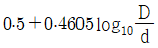
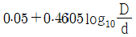
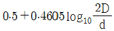
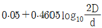
(정답률: 65%)
24. 송전선로를 연가하는 주된 목적은?
- 페란티효과의 방지
- 직격뢰의 방지
- 선로정수의 평형
- 유도뢰의 방지
(정답률: 78%)
25. 부하전류 및 단락전류를 모두 개폐할 수 있는 스위치는?
- 단로기
- 차단기
- 선로개폐기
- 전력퓨즈
(정답률: 76%)
26. 송전단 전압 161kV, 수전단 전압 155kV, 상차각 40°, 리액턴스가 49.8Ω일 때 선로손실을 무시한다면 전송 전력은 약 몇 MW인가?(오류 신고가 접수된 문제입니다. 반드시 정답과 해설을 확인하시기 바랍니다.)
- 289
- 322
- 373
- 869
(정답률: 56%)
27. 송전선로에 근접한 통신선에 유도장해가 발생하였을 때, 전자유도의 원인은?
- 역상전압
- 정상전압
- 정상전류
- 영상전류
(정답률: 78%)
28. 뒤진 역률 80%, 10kVA의 부하를 가지는 주상변압기의 2차측에 2kVA의 전력용 콘덴서를 접속하면 주상변압기에 걸리는 부하는 약 몇 kVA가 되겠는가?
- 8
- 8.5
- 9
- 9.5
(정답률: 45%)
29. 양수발전의 주된 목적으로 옳은 것은?
- 연간 발전량을 늘이기 위하여
- 연간 평균 손실 전력을 줄이기 위하여
- 연간 발전비용을 줄이기 위하여
- 연간 수력발전량을 늘이기 위하여
(정답률: 60%)
30. 어떤 수력발전소의 수압관에서 분출되는 물의 속도와 직접적인 관련이 없는 것은?
- 수면에서의 연직거리
- 관의 경사
- 관의 길이
- 유량
(정답률: 70%)
31. 차단기에서 정격차단 시간의 표준이 아닌 것은?
- 3Hz
- 5Hz
- 8Hz
- 10Hz
(정답률: 71%)
32. 변류기 개방 시 2차측을 단락하는 이유는?
- 2차측 절연 보호
- 2차측 과전류 보호
- 측정오차 방지
- 1차측 과전류 방지
(정답률: 77%)
33. 66kV, 60Hz 3상 3선식 선로에서 중성점을 소호리액터 접지하여 완전 공진상태로 되었을 때 중성점에 흐르는 전류는 몇 A인가? (단, 소호리액터를 포함한 영상회로의 등가 저항은 200Ω, 중성점 잔류전압을 4400V라고 한다.)
- 11
- 22
- 33
- 44
(정답률: 64%)
34. 배전선로의 역률개선에 따른 효과로 적합하지 않은 것은?
- 전원측 설비의 이용률 향상
- 선로절연에 요하는 비용 절감
- 전압강하 감소
- 선로의 전력손실 경감
(정답률: 67%)
35. 다음 중 전력선 반송 보호계전방식의 장점이 아닌 것은?
- 저주파 반송전류를 중첩시켜 사용하므로 계통의 신뢰도가 높아진다.
- 고장 구간의 선택이 확실하다.
- 동작이 예민하다.
- 고장점이나 계통의 여하에 불구하고 선택차단개소를 동시에 고속도 차단할 수 있다.
(정답률: 52%)
36. 송, 수전단 전압을 ES, ER 이라하고 4단자 정수를 A, B, C, D 라 할 때 전력 원선도의 반지름은?
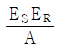
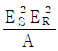
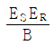
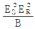
(정답률: 59%)
37. 발전소의 발전기 정격전압(kV)으로 사용되는 것은?
- 6.6
- 33
- 66
- 154
(정답률: 57%)
38. 송전계통의 중성점을 접지하는 목적으로 틀린 것은?
- 지락 고장 시 전선로의 대지 전위 상승을 억제하고 전선로와 기기의 절연을 경감시킨다.
- 소호리액터 접지방식에서는 1선 지락 시 지락점 아크를 빨리 소멸시킨다.
- 차단기의 차단용량을 증대시킨다.
- 지락고장에 대한 계전기의 동작을 확실하게 한다.
(정답률: 59%)
39. 정격용량 150kVA인 단상 변압기 두 대로 V 결선을 했을 경우 최대 출력은 약 몇 kVA인가?
- 170
- 173
- 260
- 280
(정답률: 62%)
40. 동일한 부하전력에 대하여 전압을 2배로 승압하면 전압강하, 전압강하율, 전력손실률은 각각 얼마나 감소하는지를 순서대로 나열한 것은?
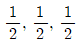
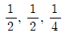
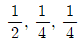
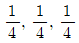
(정답률: 72%)
3과목: 전기기기
41. 3300/200V, 50kVA인 단상 변압기의 %저항, %리액턴스를 각각 2.4%, 1.6%라 하면 이때의 임피던스 전압은 약 몇 V 인가?
- 95
- 100
- 1⑤
- 110
(정답률: 34%)
42. 단상 직권정류자전동기에 관한 설명 중 틀린 것은? (단, A:전기자, C:보상권선, F:계자권선이라 한다.)
- 직권형은 A와 F가 직렬로 되어 있다.
- 보상 직권형은 A, C 및 F가 직렬로 되어있다.
- 단상 직권정류자전동기에서는 보극권선을 사용하지 않는다.
- 유도 보상 직권형은 A와 F가 직렬로 되어 있고 C는 A에서 분리한 후 단락되어 있다.
(정답률: 65%)
43. 동일 정격의 3상 동기발전기 2대를 무부하로 병렬 운전하고 있을 때, 두 발전기의 기전력 사이에 30°의 위상차가 있으면 한 발전기에서 다른 발전기에 공급되는 유효전력은 몇 kW인가? (단, 각 발전기의(1상의) 기전력은 1000V, 동기 리액턴스는 4Ω이고, 전기자 저항은 무시한다.)
- 62.5
- 62.5 × √3
- 125.5
- 125.5 × √3
(정답률: 46%)
44. 2대의 변압기로 V결선하여 3상 변압하는 경우 변압기 이용률(%)은?
- 57.8
- 66.6
- 86.6
- 100
(정답률: 73%)
45. 권선형 유도전동기의 속도-토크 곡선에서 비례추이는 그 곡선이 무엇에 비례하여 이동하는가?
- 슬립
- 회전수
- 공급전압
- 2차 저항
(정답률: 53%)
46. 동기발전기에 회전계자형을 사용하는 이유로 틀린 것은?
- 기전력의 파형을 개선한다.
- 계자가 회전자이지만 저전압 소용량의 직류이므로 구조가 간단하다.
- 전기자가 고정자이므로 고전압 대전류용에 좋고 절연이 쉽다.
- 전기자보다 계자극을 회전자로 하는 것이 기계적으로 튼튼하다.
(정답률: 45%)
47. 동기전동기의 전기자반작용에서 전기자전류가 앞서는 경우 어떤 작용이 일어나는가?
- 증자작용
- 감자작용
- 횡축반작용
- 교차자화작용
(정답률: 70%)
48. 직류기의 전기자에 일반적으로 사용되는 전기자 권선법은?
- 2층권
- 개로권
- 환상권
- 단층권
(정답률: 67%)
49. PN 접합 구조로 되어 있고 제어는 불가능하나 교류를 직류로 변환하는 반도체 정류 소자는?
- IGBT
- 다이오드
- MOSFET
- 사이리스터
(정답률: 67%)
50. 유도전동기의 회전자에 슬립 주파수의 전압을 공급하여 속도를 제어하는 방법은?
- 2차 저항법
- 2차 여자법
- 직류 여자법
- 주파수 변환법
(정답률: 51%)
51. 단상 전파정류회로를 구성한 것으로 옳은 것은?
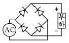
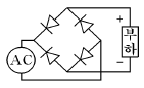
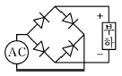
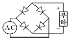
(정답률: 66%)
52. 60Hz, 12극, 회전자 외경 2m의 동기발전기에 있어서 자극면의 주변속도(m/s)는 약 얼마인가?
- 34
- 43
- 59
- 63
(정답률: 59%)
53. 이상적인 변압기에서 2차를 개방한 벡터도 중서로 반대 위상인 것은?
- 자속, 여자 전류
- 입력 전압, 1차 유도기전력
- 여자 전류, 2차 유도기전력
- 1차 유도기전력, 2차 유도기전력
(정답률: 43%)
54. 정격전압 6000V, 용량 5000kVA 의 Y결선 3상 동기발전기가 있다. 여자전류 200A에서의 무부하 단자전압 6000V, 단락전류 600A일 때, 발전기의 단락비는 약 얼마인가?
- 0.25
- 1
- 1.25
- 1.5
(정답률: 53%)
55. 정격전압 200V, 전기자 전류 100A일 때 1000rpm으로 회전하는 직류 분권전동기가 있다. 이 전동기의 무부하 속도는 약 몇 rpm인가? (단, 전기자 저항은 0.15Ω, 전기자 반작용은 무시한다.)
- 981
- 1081
- 1100
- 1180
(정답률: 62%)
56. 3상 유도전동기의 원선도 작성에 필요한 기본량이 아닌 것은?
- 저항 측정
- 슬립 측정
- 구속 시험
- 무부하 시험
(정답률: 68%)
57. 3상 분권정류자전동기의 설명으로 틀린 것은?
- 변압기를 사용하여 전원전압을 낮춘다.
- 정류자권선은 저전압 대전류에 적합하다.
- 부하가 가해지면 슬립의 발생 소요 토크는 직류전동기와 같다.
- 특성이 가장 뛰어나고 널리 사용되고 있는 전동기는 시라게 전동기이다.
(정답률: 39%)
58. 다음은 직류 발전기의 정류 곡선이다. 이 중에서 정류 초기에 정류의 상태가 좋지 않은 것은?
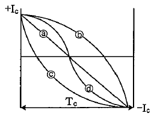
- ⓐ
- ⓑ
- ⓒ
- ⓓ
(정답률: 68%)
59. 유도전동기 원선도에서 원의 지름은? (단, E를 1차 전압, r는 1차로 환산한 저항, χ를 1차로 환산한 누설 리액턴스라 한다.)
- rE에 비례
- rχE에 비례
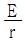
에 비례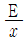
에 비례
(정답률: 59%)
60. 어떤 단상 변압기의 2차 무부하전압이 240V이고 정격 부하시의 2차 단자전압이 230V이다. 전압변동률은 약 몇 % 인가?
- 2.35
- 3.35
- 4.35
- 5.35
(정답률: 67%)
4과목: 회로이론
61.
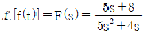
일 때, f(t)의 최종값 f(∞)는?- 1
- 2
- 3
- 4
(정답률: 71%)
62. 전압과 전류가 각각 v = 141.4sin(377t +
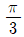
)(V), i = √8sin(377t +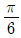
)(A)인 회로의 소비(유효)전력은 약 몇 W인가?- 100
- 173
- 200
- 344
(정답률: 57%)
63. 전달함수 출력(응답)식 C(s) = G(s)R(s)에서 입력함수 R(s)를 단위 임펄스 δ(t)로 인가할 때 이 계의 출력은?
- C(s) = G(s)δ(s)
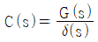
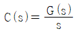
- C(s) = G(s)
(정답률: 59%)
64. 단자 a와 b사이에 전압 30V를 가했을 때 전류 I가 3A 흘렀다고 한다. 저항 r(Ω)은 얼마인가?
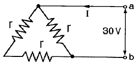
- 5
- 10
- 15
- 20
(정답률: 60%)
65. Y결선된 대칭 3상 회로에서 전원 한 상의 전압이 Va = 220√2 sinωt(V)일 때 선간전압의 실효값 크기는 약 몇 V인가?
- 220
- 310
- 380
- 540
(정답률: 62%)
66. a+a2 의 값은? (단, a=ej2π/3=1∠120° 이다.)
- 0
- -1
- 1
- a3
(정답률: 58%)
67. 코일의 권수 N=1000회이고, 코일의 저항 R=10Ω이다. 전류 I=10A를 흘릴 때 코일의 권수 1회에 대한 자속이 ø=3×10-2Wb이라면 이 회로의 시정수(s)는?
- 0.3
- 0.4
- 3.0
- 4.0
(정답률: 57%)
68. 평형 3상 Y결선 회로의 선간전압이 Vl, 상전압이 Vp, 선전류가 Il, 상전류가 Ip 일 때 다음의 수식 중 틀린 것은? (단, P는 3상 부하전력을 의미한다.)
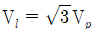
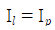
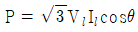
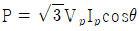
(정답률: 66%)
69. 다음 두 회로의 4단자 정수 A, B, C, D가 동일한 조건은?
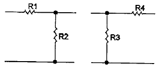
- R1 = R2, R3 = R4
- R1 = R3, R2 = R4
- R1 = R4, R2 = R3 = 0
- R2 = R3, R1 = R4 = 0
(정답률: 51%)
70. 정현파 교류
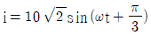
를 복소수의 극좌표 형식인 페이저(phasor)로 나타내면?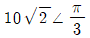
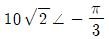
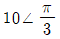
(정답률: 62%)
71. 평형 3상 저항 부하가 3상 4선식 회로에 접속되어 있을 때 단상 전력계를 그림과 같이 접속하였더니 그 지시 값이 W(W) 이었다. 이 부하의 3상 전력(W)은?
- √2 W
- 2 W
- √3 W
- 3 W
(정답률: 48%)
72. 3상 불평형 전압에서 불평형률은?
(정답률: 71%)
73. 저항 1Ω과 인덕턴스 1H를 직렬로 연결한 후 60Hz, 100V의 전압을 인가할 때 흐르는 전류의 위상은 전압의 위상보다 어떻게 되는가?(오류 신고가 접수된 문제입니다. 반드시 정답과 해설을 확인하시기 바랍니다.)
- 뒤지지만 90° 이하이다.
- 90° 늦다.
- 앞서지만 90° 이하이다.
- 90° 빠르다.
(정답률: 49%)
74. 어떤 정현파 교류전압의 실효값이 314V일 때 평균값은 약 몇 V 인가?
- 142
- 283
- 365
- 382
(정답률: 62%)
75. 그림과 같은 RC 직렬회로에 t=0에서 스위치 S를 닫아 직류 전압 100V를 회로의 양단에 인가하면 시간 t에서의 충전전하는? (단, R=10Ω, C=0.1F 이다.)
- 10(1-e-t)
- -10(1-et)
- 10e-t
- -10et
(정답률: 51%)
76. 전압이 v = 10sin10t + 20sin20t(V) 이고 전류가 i = 20sin10t + 10sin20t(A)이면, 소비(유효)전력(W)은?
- 400
- 283
- 200
- 141
(정답률: 50%)
77. 평형 3상 부하의 결선을 Y에서 △로 하면 소비전력은 몇 배가 되는가?
- 1.5
- 1.73
- 3
- 3.46
(정답률: 59%)
78. V1(s)을 입력, V2(s)를 출력이라 할 때, 다음 회로의 전달함수는? (단, C1 = 1F, L1 = 1H)
(정답률: 46%)
79. 다음과 같은 4단자 회로에서 영상 임피던스(Ω)는?
- 200
- 300
- 450
- 600
(정답률: 56%)
80. 의 라플라스 변환은? (단, x(0)=0, X(s)=ℒ[x(t)].)
(정답률: 55%)
5과목: 전기설비기술기준 및 판단 기준
81. 전기철도에서 직류 귀선의 비절연 부분에 대한 전식 방지를 위한 귀선의 극성은 어떻게 해야 하는가?
- 감극성으로 한다.
- 가극성으로 한다.
- 정극성으로 한다.
- 부극성으로 한다.
(정답률: 44%)
82. 내부에 고장이 생긴 경우에 자동적으로 전로로부터 차단하는 장치가 반드시 필요한 것은?
- 뱅크용량 1000kVA인 변압기
- 뱅크용량 10000kVA인 조상기
- 뱅크용량 300kVA인 분로리액터
- 뱅크용량 1000kVA인 전력용 커패시터
(정답률: 47%)
83. 제2종 접지공사에 사용하는 접지선을 사람이 접촉할 우려가 있는 곳에 철주 기타의 금속체를 따라서 시설하는 경우에는 접지극을 그 금속체로부터 지중에서 몇 m 이상 이격시켜야 하는가? (단, 접지극을 철주의 밑면으로부터 30cm 이상의 깊이에 매설하는 경우는 제외한다.)
- 1
- 2
- 3
- 4
(정답률: 33%)
84. 사용전압 154kV의 가공전선을 시가지에 시설하는 경우 전선의 지표상의 높이는 최소 몇 m 이상이어야 하는가? (단, 발전소・변전소 또는 이에 준하는 곳의 구내와 구외를 연결하는 1경간 가공전선은 제외한다.)
- 7.44
- 9.44
- 11.44
- 13.44
(정답률: 54%)
85. 과전류차단기를 설치하지 않아야 할 곳은?
- 수용가의 인입선 부분
- 고압 배전선로의 인출장소
- 직접 접지계통에 설치한 변압기의 접지선
- 역률조정용 고압 병렬콘덴서 뱅트의 분기선
(정답률: 61%)
86. 가공전선로의 지지물에 시설하는 지선의 안전율과 허용 인장하중의 최저값은?
- 안전율은 2.0 이상, 허용 인장하중 최저값은 4kN
- 안전율은 2.5 이상, 허용 인장하중 최저값은 4kN
- 안전율은 2.0 이상, 허용 인장하중 최저값은 4.4kN
- 안전율은 2.5 이상, 허용 인장하중 최저값은 4.31kN
(정답률: 74%)
87. 건조한 장소로서 전개된 장소에 한하여 고압 옥내배선을 할 수 있는 것은?
- 금속관공사
- 애자사용공사
- 합성수지관공사
- 가요전선관공사
(정답률: 61%)
88. 전용 개폐기 또는 과전류차단기에서 화약류 저장소의 인입구까지의 배선은 어떻게 시설하는가?
- 애자사용공사에 의하여 시설한다.
- 케이블을 사용하여 지중으로 시설한다.
- 케이블을 사용하여 가공으로 시설한다.
- 합성수지관공사에 의하여 가공으로 시설한다.
(정답률: 58%)
89. 백열전등 또는 방전등에 전기를 공급하는 옥내전로의 대지전압을 몇 V 이하이어야 하는가?
- 150
- 300
- 400
- 600
(정답률: 69%)
90. 특고압 가공전선로의 지지물에 시설하는 가공통신 인입선은 조영물의 붙임점에서 지표상의 높이를 몇 m 이상으로 하여야 하는가? (단, 교통에 지장이 없고 또한 위험의 우려가 없을 때에 한한다.)
- 2.5
- 3
- 3.5
- 4
(정답률: 35%)
91. 특고압 가공전선로에 사용하는 가공지선에는 지름 몇 mm 이상의 나경동선을 사용하여야 하는가?
- 2.6
- 3.5
- 4
- 5
(정답률: 43%)
92. 특고압 가공전선로에서 철탑(단주 제외)의 경간은 몇 m 이하로 하여야 하는가?
- 400
- 500
- 600
- 700
(정답률: 63%)
93. 피뢰기를 반드시 시설하지 않아도 되는 곳은?
- 발전소・변전소의 가공전선의 인출구
- 가공전선로와 지중전선로가 접속되는 곳
- 고압 가공전선로로부터 수전하는 차단기 2차측
- 특고압 가공전선로로부터 공급을 받는 수용장소의 인입구
(정답률: 49%)
94. 지중전선이 지중약전류 전선 등과 접근하거나 교차하는 경우에 상호 간의 이격거리가 저압 또는 고압의 지중전선이 몇 cm 이하일 때, 지중전선과 지중약전류 전선 사이에 견고한 내화성의 격벽(隔璧)을 설치하여야 하는가?
- 10
- 20
- 30
- 60
(정답률: 49%)
95. 발전기의 보호장치에 있어서 과전류, 압유장치의 유압저하 및 베어링의 온도가 현저히 상승한 경우 자동적으로 이를 전로로부터 차단하는 장치를 시설하여야 한다. 해당되지 않는 것은?
- 발전기에 과전류가 생긴 경우
- 용량 10000kVA 이상인 발전기의 내부에 고장이 생긴 경우
- 원자력발전소에 시설하는 비상용 예비발전기에 있어서 비상용 노심냉각장치가 작동한 경우
- 용량 100kVA 이상의 발전기를 구동하는 풍차의 압유장치의 유압, 압축공기장치의 공기압이 현저히 저하한 경우
(정답률: 49%)
96. 전기욕기용 전원장치로부터 욕조안의 전극까지의 전선 상호간 및 전선과 대지 사이에 절연저항 값은 몇 MΩ 이상이어야 하는가?
- 0.1
- 0.2
- 0.3
- 0.4
(정답률: 51%)
97. 지중 전선로를 직접 매설식에 의하여 시설하는 경우에 차량 및 기타 중량물의 압력을 받을 우려가 있는 장소의 매설 깊이는 몇 m 이상인가?(관련 규정 개정전 문제로 여기서는 기존 정답인 2번을 누르면 정답 처리됩니다. 자세한 내용은 해설을 참고하세요.)
- 1.0
- 1.2
- 1.5
- 1.8
(정답률: 64%)
98. 지중 또는 수중에 시설되어 있는 금속체의 부식을 방지하기 위한 전기부식방지 회로의 사용전압은 직류 몇 V 이하이어야 하는가? (단, 전기부식방지 회로 전기부식방지용 전원 장치로부터 양극 및 피방식체까지의 전로를 말한다.)
- 30
- 60
- 90
- 120
(정답률: 60%)
99. 특고압 전선로에 사용되는 애자장치에 대한 갑종 풍압하중은 그 구성재의 수직 투영면적 1m2에 대한 풍압하중을 몇 Pa를 기초로 하여 계산한 것인가?
- 588
- 666
- 946
- 1039
(정답률: 48%)
100. 교류 전차선로의 진로에 시설하는 흡상변압기(吸上變壓器)・직렬커패시터나 이에 부속된 기구 또는 전선이나 교류식 전기철도용 신호 회로에 전기를 공급하기 위한 특고압용의 변압기를 옥외에 시설하는 경우 지표상 몇 m 이상에 시설해야 하는가? (단, 시가지 이외의 지역으로 울타리를 시설하지 않는 경우이다.)(오류 신고가 접수된 문제입니다. 반드시 정답과 해설을 확인하시기 바랍니다.)
- 5
- 6
- 7
- 8
(정답률: 39%)